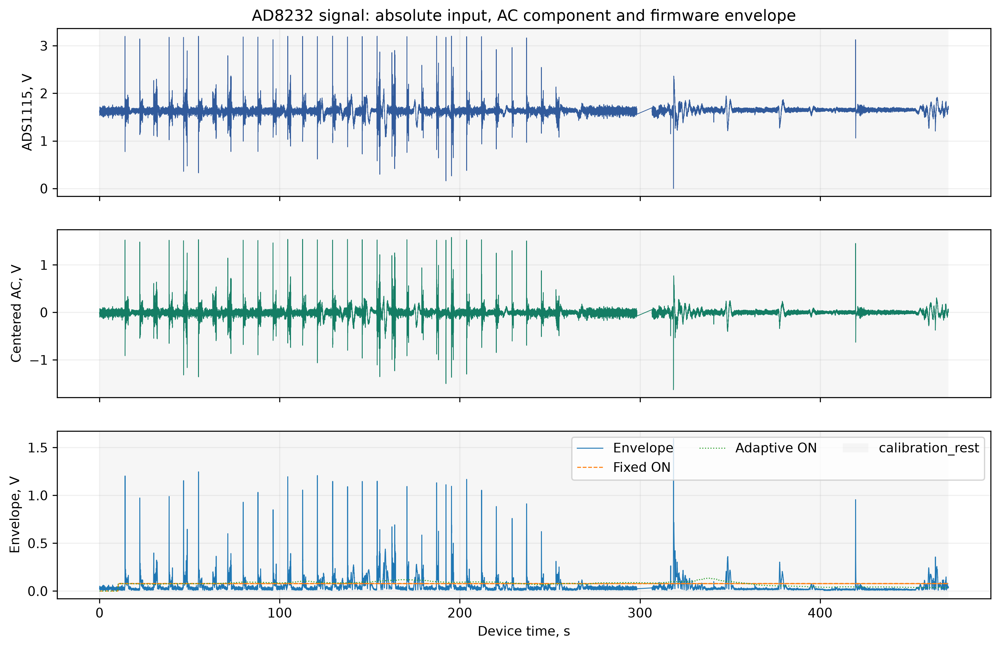
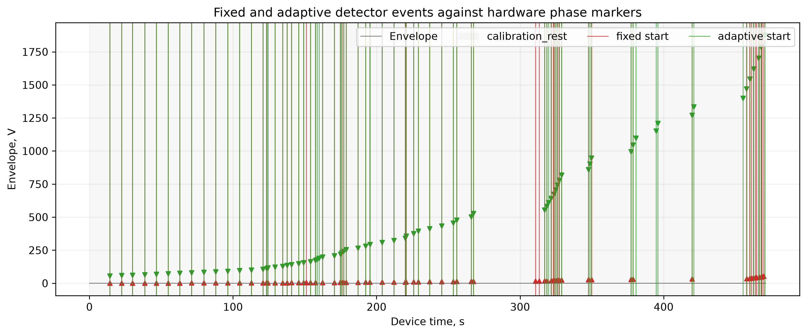
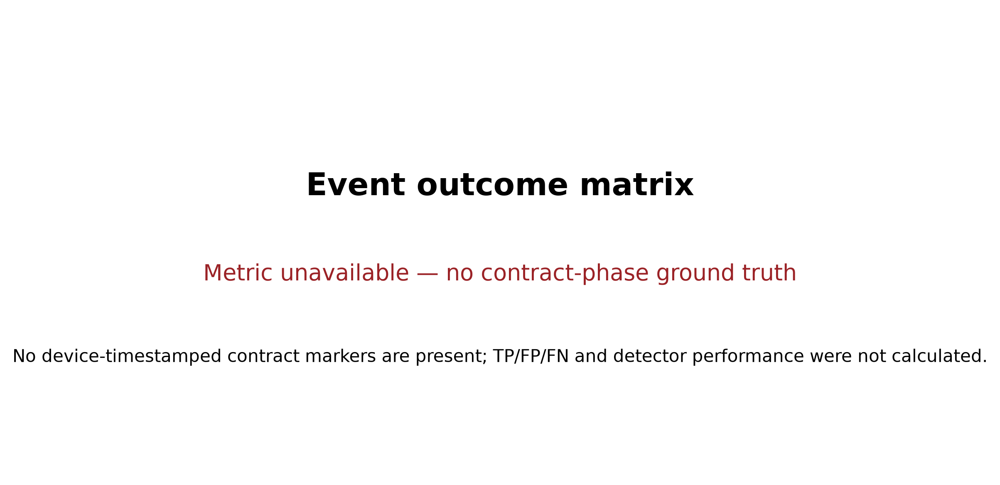
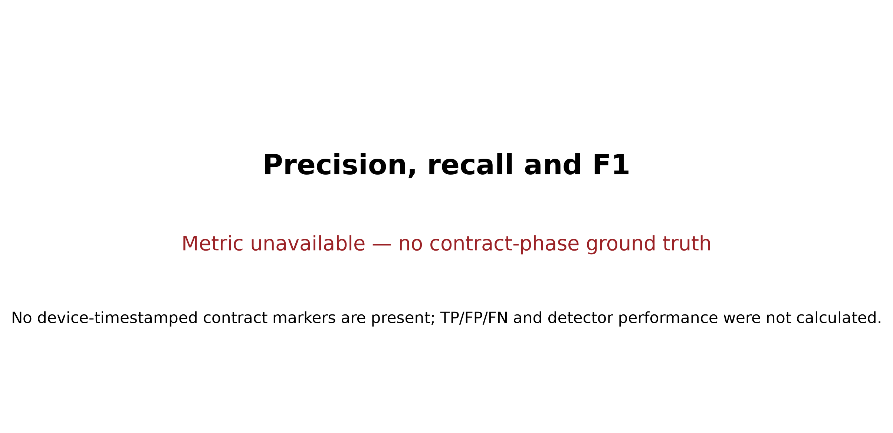
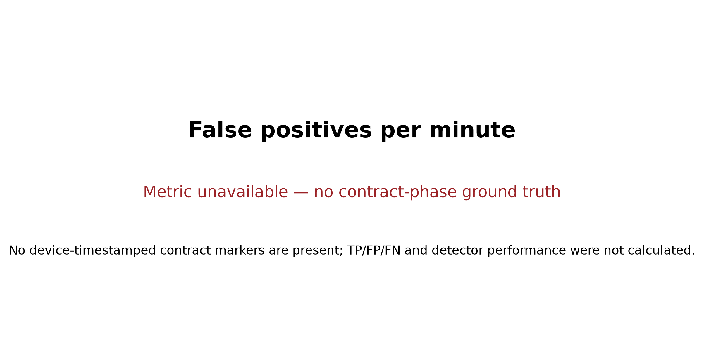
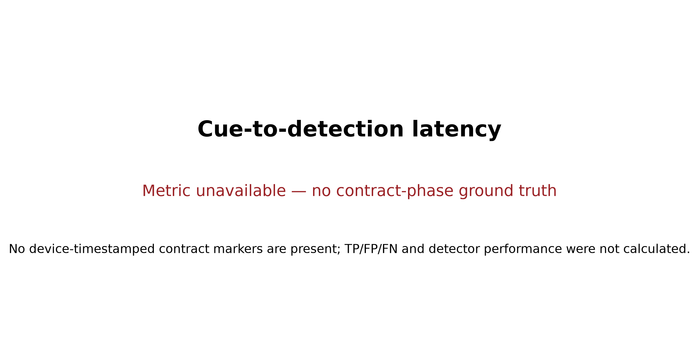
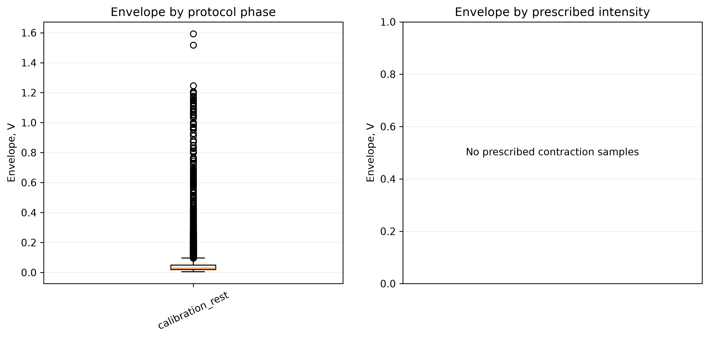
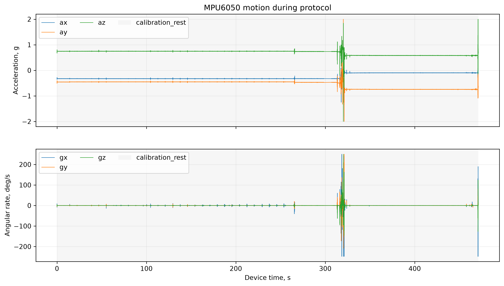
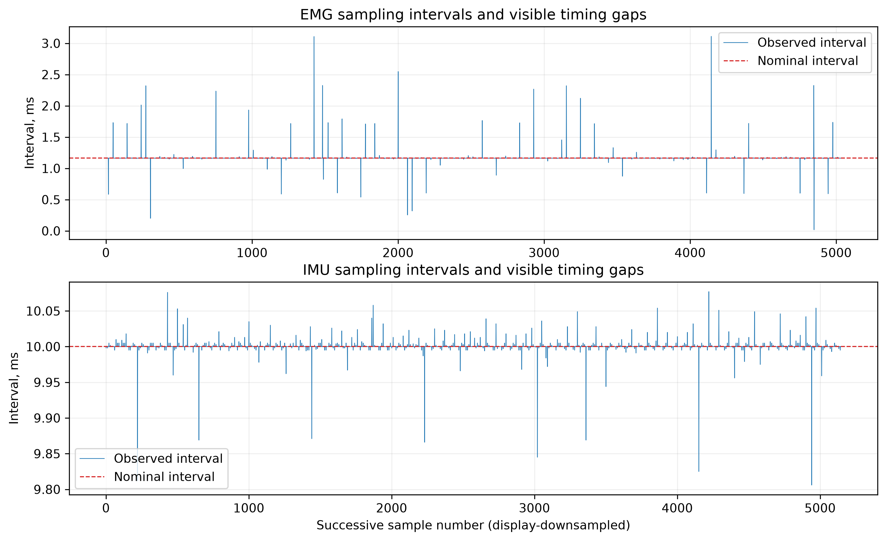

Session: 20260917_001221_25ad4ea0; outcome:
in_progress.
No device-timestamped contract markers are present; TP/FP/FN and detector performance were not calculated. Prescribed weak/medium/strong labels are protocol instructions, not measured force.
| Stream | Samples | Rate, Hz | Index gaps | Timer gaps |
|---|---|---|---|---|
| emg | 397568 | 843.71 | 7605 | 423 |
| imu | 46310 | 98.281 | 810 | 0 |
| Detector | TP | FP | FN | Precision | Recall | F1 | FP/min | Cue-to-detection, ms | Trial bootstrap 95% CI |
|---|---|---|---|---|---|---|---|---|---|
| No valid contract ground truth. | |||||||||









{
"participant_id": "P001",
"session_note": "",
"protocol": {
"repetitions": 30,
"prepare_s": 3.0,
"contract_s": 2.0,
"rest_s": 3.0,
"seed": 20260916
},
"algorithm": {
"on_coefficient": 6.0,
"off_coefficient": 3.0,
"motion_gyro_dps": 20.0,
"motion_accel_delta_g": 0.25
},
"firmware": {
"target": "esp32s3",
"protocol_version": 1
},
"serial_port": "COM13",
"prescribed_intensity_note": "weak/medium/strong are instructions, not measured force",
"session_id": "20260917_001221_25ad4ea0",
"application_version": "1.0.0",
"git_commit": "d791eb479dcd17ed832ae32fa404c7a7beac302a",
"started_utc": "2026-09-16T21:12:21.946419+00:00",
"outcome": "in_progress",
"format_version": 2,
"label_source": "device_phase_markers"
}
ADS1115 voltage is not clinical ECG amplitude. MPU6050 yaw is relative and drifts without a magnetometer. Event metrics count one first detector start per hardware-marked contraction interval. This software is a research prototype, not a medical device.